TOQUE EM UM SÍMBOLO
Qual luz acendeu?
Cada símbolo tem um significado e uma urgência. Escolha o seu para saber se dá para rodar até a oficina.
Mecânica · Elétrica · Geometria
Barulho, luz no painel, cheiro estranho? Aponte o problema no carro 3D e mande o pré-diagnóstico para a equipe do Sr. Carlos antes de sair de casa.
Pré-diagnóstico 3D
Gire o carro, escolha a área e marque o que você sente. O relato chega pronto no nosso WhatsApp e a gente responde com o próximo passo.
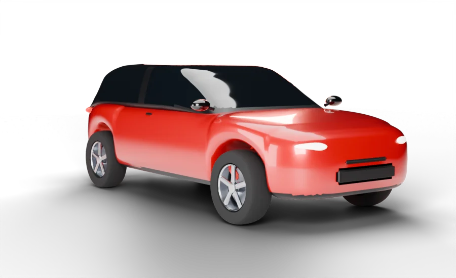
Arraste para girar o carro
AGUARDANDO SELEÇÃO
Escolha uma área acima ou toque em um ponto vermelho no carro. Com o Raio-X ligado você vê motor, câmbio, suspensão e escapamento por dentro.
É uma orientação. A confirmação é feita aqui na oficina, com scanner e teste de rodagem.
Luzes do painel
Vermelha pede para parar com segurança. Amarela pede revisão logo. Toque no símbolo igual ao do seu painel.
TOQUE EM UM SÍMBOLO
Cada símbolo tem um significado e uma urgência. Escolha o seu para saber se dá para rodar até a oficina.
Serviços
Mecânica desde 2003, elétrica e geometria desde 2008. Especialistas em revisão: cada carro sai com o checklist preenchido.
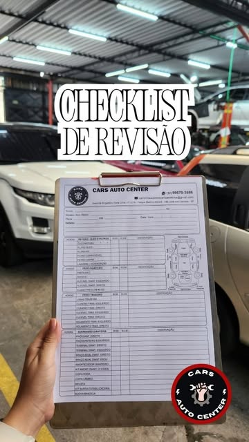
Óleo e filtros, freios, suspensão, arrefecimento, correias, bateria e luzes conferidos item por item. Você recebe a ficha e o orçamento antes de qualquer troca.
Agendar revisão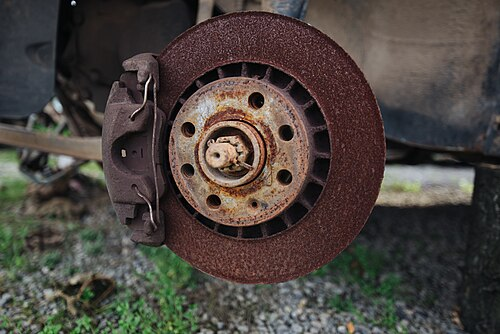
Pastilhas, discos, fluido e sangria. Disco riscado assim já não freia como deveria.
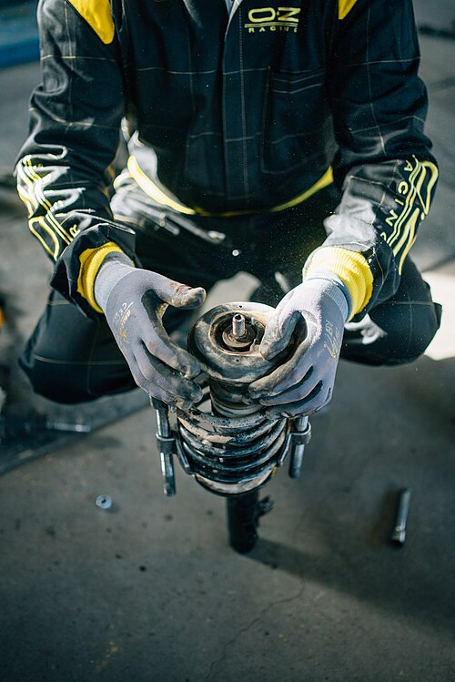
Amortecedores, molas, buchas, bieletas e terminais. Fim daquele barulho seco na lombada.
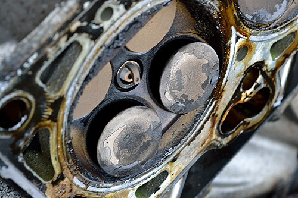
É isto que acontece quando ela rompe: válvulas tortas e cabeçote aberto. Trocar no prazo sai bem mais barato.
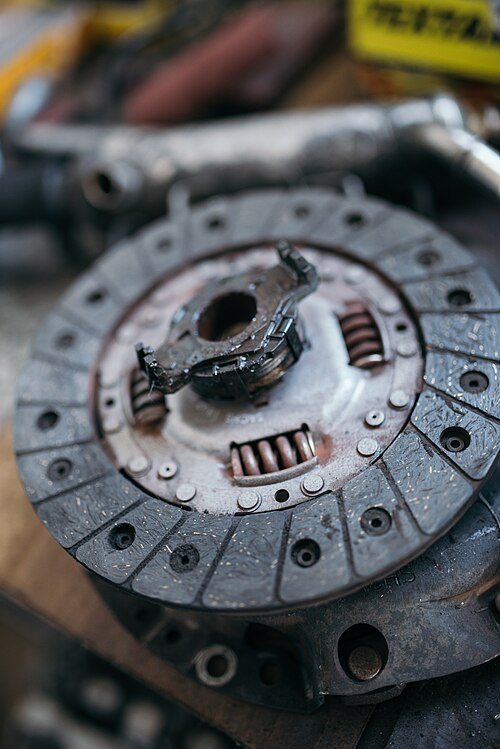
Troca de embreagem completa e de óleo do câmbio, inclusive automático.
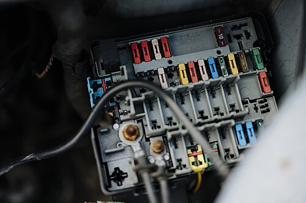
Bateria, alternador, motor de partida, chicotes e leitura da injeção eletrônica com scanner.
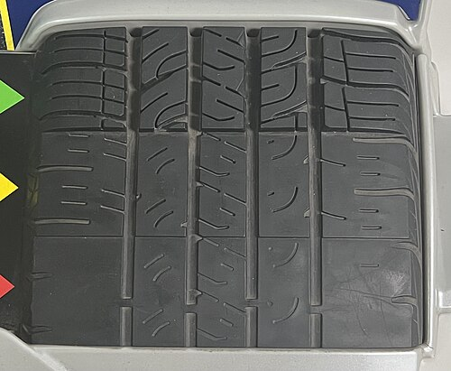
Alinhamento, balanceamento e cambagem. Carro reto, pneu durando mais.
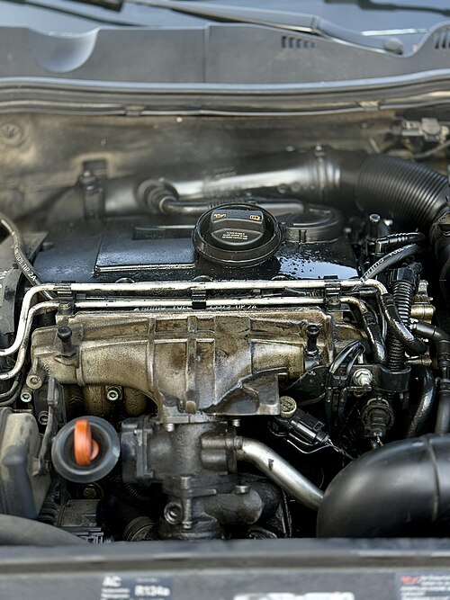
Vazamentos, juntas, retentores, arrefecimento e retífica com parceiros de confiança.
Quanto dura cada peça
Medidas de referência que a equipe confere na revisão. O manual do seu carro manda no prazo exato.
10 mm nova · troca abaixo de 3 mm
Abaixo do limite, o metal encosta no disco e o chiado começa.
8 mm novo · mínimo legal 1,6 mm
Com pouco sulco, a água não escoa e o carro aquaplana na chuva.
entre 40 e 100 mil km, conforme o manual
Não dá aviso. Rompeu, o motor para e as válvulas podem empenar.
troca a cada 2 anos
Ele absorve umidade do ar e ferve mais fácil em descida longa.
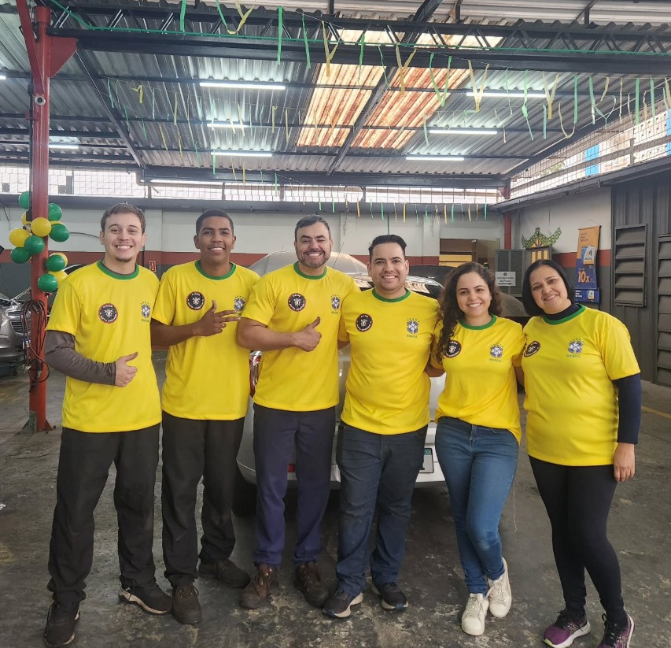
A oficina
Começamos em 2003 no ramo de mecânica automotiva. Em 2008 incluímos a parte elétrica e a geometria, e assim passamos a cobrir os itens mais necessários da manutenção.
O Sr. Carlos é mecânico desde os 12 anos, quando começou a profissão com o pai, e completou o aprendizado com cursos técnicos e profissionalizantes. Os funcionários também têm larga experiência e cursos na área: um time completo para tudo que o seu carro precisa.
Agradecemos pela preferência e confiança.
CARlinhos Auto Mecânica e Elétrica · Qualidade e Honestidade Sempre.
 @carsoficina
@carsoficina
 Avaliações no Google
Avaliações no Google
266 avaliações de clientes reais
“Diagnóstico completo do carro, orçamento enviado de forma muito clara e objetiva e com valor justo! O cuidado com o carro é impressionante, meu carro voltou limpo, com volante e banco protegido.”
“Pessoal, eu super recomendo o serviço. Profissionais justos e competentes. Poderia ter inventado coisas no serviço do meu carro. Mas, pelo contrário, foi honesto.”
“Atendimento diferenciado, profissionais bem capacitados, execução de serviço em tempo hábil. Foi executada troca de embreagem completa, vazamento de guarnições do motor e troca de correia dentada, nota 10.”
“Equipe profissional e com excelente atendimento. O local é limpo e organizado, o que já passa uma ótima impressão logo na chegada.”
Visite a oficina
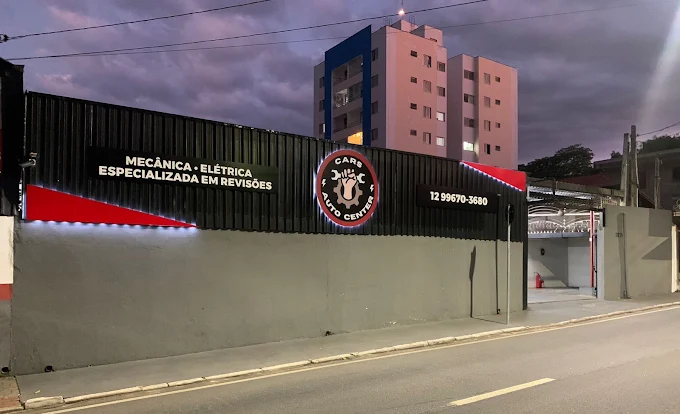
| Segunda | 7h–12h · 13h–17h30 |
|---|---|
| Terça | 7h–12h · 13h–17h30 |
| Quarta | 7h–12h · 13h–17h30 |
| Quinta | 7h–12h · 13h–17h30 |
| Sexta | 7h–12h · 13h–17h |
| Sábado | Fechado |
| Domingo | Fechado |